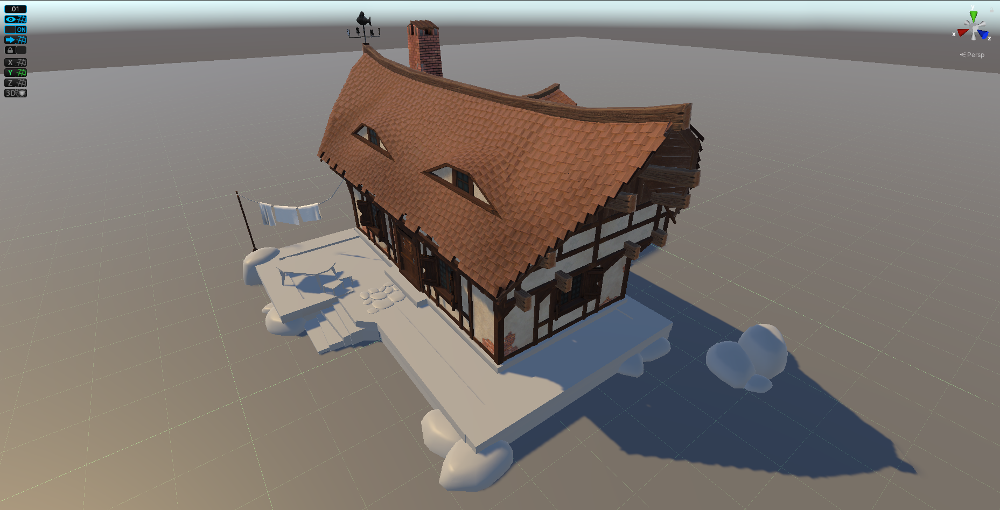
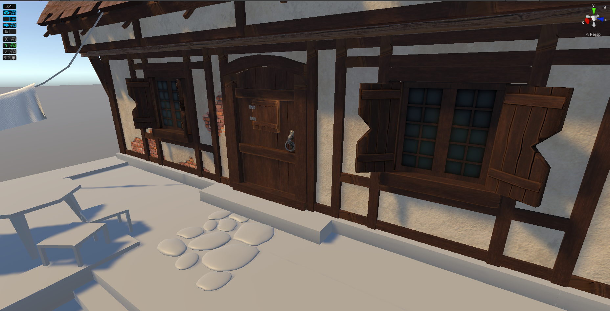
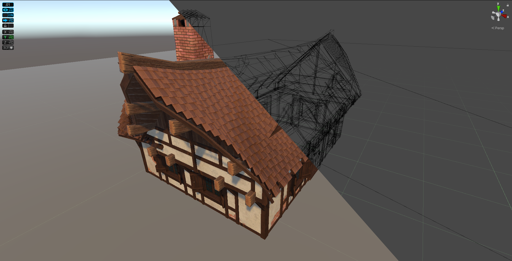
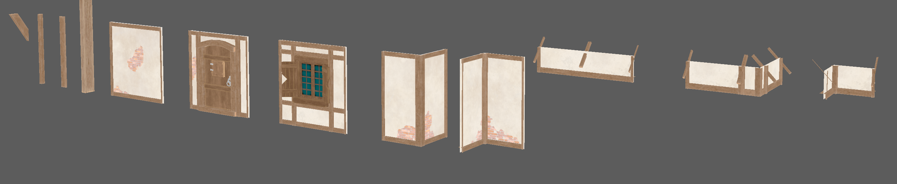
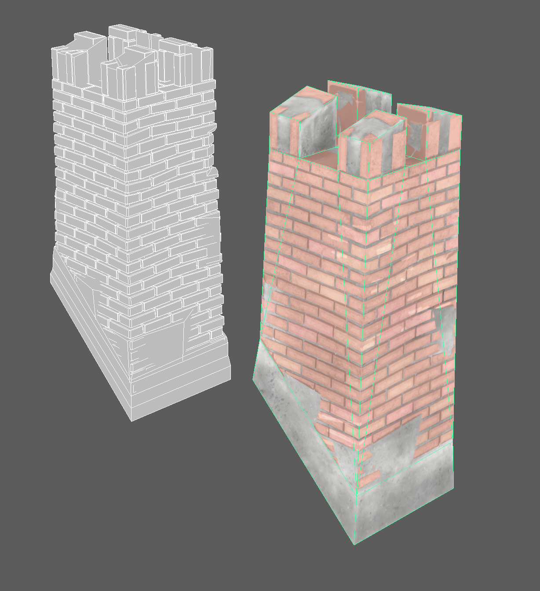

Screenshots
Here are a few screenshots of the project in its current state:




Method
Right away I decided that I wanted to use a modular system, using as few base pieces as possible
(i.e. planks and beams) and then modifying those. I sclulpted these in zbrush (see image below)
but in retrospect they could have been made entirely in maya with a bit more effort added in substance painter.
For some
variation in the walls I created a longer texture with several imperfections in it and simply moved
the UVs of the wall pieces to where I wanted them. I hid the seams with wooden
details (see video below). Not a very interesting method but doesn't require fancy shaders.
I wanted to save some time and experiment with making more 'organic' shapes for the roof, so I made a
base shape in maya for the roof coverage, as well as a roof tile model. Sent it over to Houdini and
generated relaxed points on the surface, used a copytopoints node to duplicate the roof tile to the points (see video below). Converted
it to voxels and applied some imperfections on it then outputing my highpoly file. Low poly was made
by hand, as were the roof beams.
Improvements
To take this a step further, should further variations be wished, I would argue for using something like a houdini SOP network to generate houses from boxes or curves - see below for an example of mesh generated using other meshes.
Adding more variations could markedly improve the look. The changes could probably be controlled by using houdini engine in
Unity/Unreal (I have
not tried to expose this functionality yet) to allow the designer to pick different wall variations by using a switch node, or directly in houdini
for different parts of the wall (a wall could be a window, damaged wall or other types, it
could also be randomized using a few rules plus a seed).
As for the wall textures I see two alternatives to my current solution:
- Use a shader with two different tilable materials, as well as a mask to define intersections. This would have been more fun to use and allow for more unique setups. since I don't know the limitations of mobile hardware enough I decided against it.
- Model imperfections and stick them on surfaces of the wall where seen fit. The upside is that there would be less wasted texture space, the downside that it would look the same as it currently does or possibly slightly worse.
A better option would have been to generate curves along the base roof mesh (see image below) to
place tiles along for the high poly version as described by
Øyvind Fiksdal.
My current solution used random scattering with a bit of relaxation on the points to prevent too
many overlaps, while Fiksdals solution would allow the panes to be placed realistically.
Another option to make the solution a bit more cohesive and give designers more control would be to
use modular systems similar to that of the walls, downside being that this would be more stiff and would not
allow for more 'fun' shapes.
Lastly the roof could have used some some moss to feel more alive. I could have added this by scattering points on
the mesh
using either painted mask or detect crevices in the high poly mesh and using a perlin noise to
further
subract and create decent looking patterns for placements, below you can see a quick mockup of how that could be done.
As mentioned earlier the weakness I recognize in my capabilities is clearly that I have limited experience with modern texturing solutions such as substance painter/designer, and no experience with 3ds Max which I am aware you use in your workflow. What I can already offer while I get up to speed and learn to use these tools effectively, is a skillset that is more technical. I might be able to assist other artists by improving the pipeline. I've made a few tools to deal with both pipeline improvements (for level design) and asset management (batch renaming and moving files for example) and I have some knowledge of materials/shaders.
← back